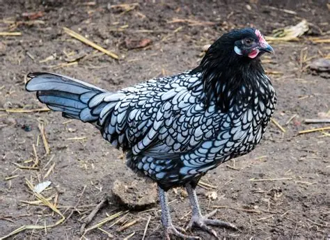
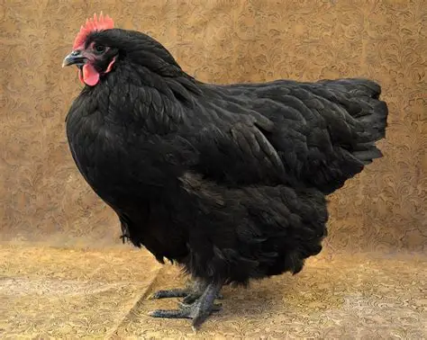
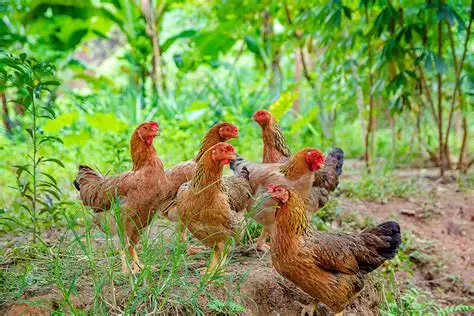
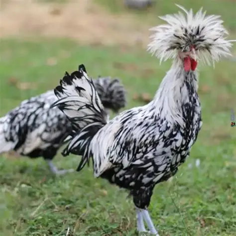

Types of Chickens 🐓
Chickens come in hundreds of breeds worldwide, but they’re often grouped by their primary purpose. Here are the main categories:
- Layers:
These breeds are prized for their egg-laying ability.

Leghorn
Up to 300 eggs/year, hardy and active.

Ancona
Hardy Mediterranean breed, lays white eggs.

Australorp
World record holder: 364 eggs in one year.
- Broilers:
Bred for rapid growth and meat production.

Cornish Cross
Fast-growing, commercial meat bird, market-ready in 6–8 weeks.

Freedom Ranger
Slower growth, richer flavor, natural foraging behavior.
- Dual-purpose:
Balanced breeds that provide both eggs and meat.

Plymouth Rock
Reliable egg layers and good table birds.

Sussex
Friendly, versatile, steady egg production.
- Ornamental:
Raised mainly for their beauty and unique traits.

Silkie
Fluffy feathers, gentle temperament, popular as pets.

Polish
Dramatic feather crest, exhibition bird, quirky personality.
Each type reflects how humans have shaped chickens for farming, cuisine, or companionship. From the hardworking layers to the show-stopping ornamentals, chickens are as diverse as the cultures that raise them.